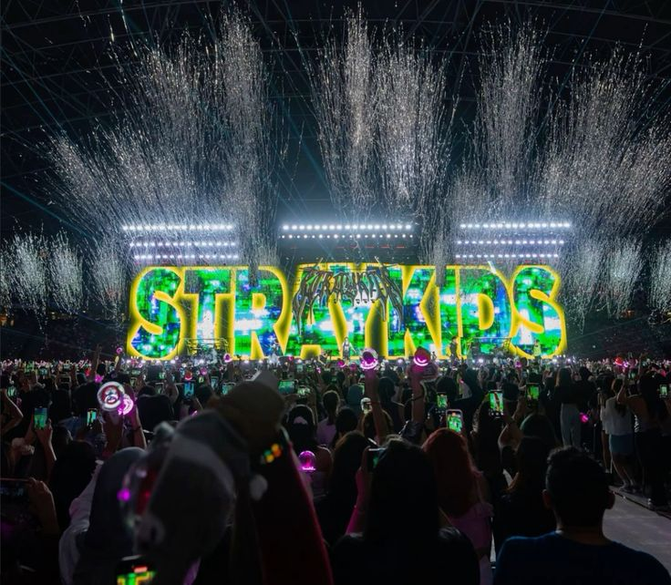

Жанр перерос в популярную субкультуру?!
Что такое k-pop?
K-pop (от англ. Korean popular music — «корейская популярная музыка») — музыкальный жанр, возникший в Южной Корее. Он вобрал в себя элементы западного электропопа, хип-хопа, танцевальной музыки и современного ритм-н-блюза.
Что такое kpop группа?

это группа в жанре корейской поп-музыки, зародившегося в Южной Корее. Как правило, в таких коллективах артисты поют и танцуют одновременно. Их выступления — это всегда шоу: сложнейшие хореографии, яркие визуальные эффекты и продуманные до мелочей образы.
Вокалист- основной певец группы
Танцор- мастер хореографии
Рэпер- исполнитель рэп-партий
Вижуал- «Лицо» группы
Поколения гигантов k-pop
♫ Легенды 2-го и 3-го поколения
BTS (Bangtan Sonyeondan)
Группа, изменившая правила игры. Своими искренними текстами на социальные темы они нашли отклик у молодежи по всему миру.BLACKPINK
Группа, несущая философию «girl crush». Их стиль — смесь элегантной роскоши и мощной энергии.TWICE
TWICE стали королевами яркого, «цепляющего» K-Pop. Их ранние хиты называют национальным достоянием Южной Кореи из-за их популярности.
♫ Настоящее и будущее: 4-е и 5-е поколение
STRAY KIDS
Самостоятельно участвуют в продюсировании своей музыки, которая славится мощным звучанием и бунтарским духом.Это обеспечивает не только аутентичность и личную связь с музыкой, но и создает уникальное звучание, отличающееся от стандартных K-Pop шаблонов.NEWJEANS
Произвели революцию своим ярким и ностальгическим звучанием и минималистичными клипами.IVE
Группа, пропагандирующая уверенность в себе и любовь к себе.
Почему они так популярны?
Кпоп превратился из нишевого жанра в мировой культурный феномен благодаря уникальному сочетанию факторов, которые создают совершенную развлекательную экосистему.
1. Перформанс
Танец в K-Pop — это отдельный вид искусства. Сложные, идеально отточенные движения стали визитной карточкой жанра.
2. Контент 24/7
Реалити-шоу, влоги, прямые эфиры — фанаты получают доступ к огромному количеству контента.
3. Социальные сети
Активное ведение соцсетей и участие в челленджах делает артистов ближе к глобальной аудитории.
4. Фандомы
Фанаты — движущая сила K-Pop, формируя глобальное сообщество.